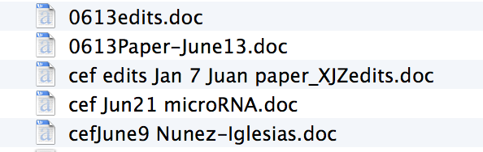

Using Git and GitHub to Contribute to Open Source Projects
This project is maintained by jni
Title: Git and Github: a tutorial
Git and Github: a tutorial
There are (at least) three stages of git enlightenment:
- Maintain a linear history for a file or group of files.
- Use branches effectively to group related changes together, as well as maintain parallel versions.
- Use branches and pull-requests to collaborate effectively.
It took me a long time to pass all three, and I hope this tutorial will help someone get there faster.
What is Git and why do you want it?
Git is a revision control management system[^git][^gitbook]. It helps you keep track of changes to your files. You've probably had the following thing happen to you before:

I certainly have:

Notice:
- Different versions of the same document have different filenames.
- The date and author of a change are encoded haphazardly in the filename.
- Serial edits by different authors are concatenated in the filename, with no indication as to whose edit came first.
- These are just five files in one directory; other revisions are probably scattered around my various hard drives and as email attachments.
This is known as revision hell, and it happens when you don't use revision control, even if you are working alone. Systems such as git save you from this.
Click on the sections below to get started with git!
References
[^git]: http://git-scm.com/ The Git homepage. A plethora of resources.
[^gitbook]: http://git-scm.com/book The Git book. Your starting point for all git knowledge.